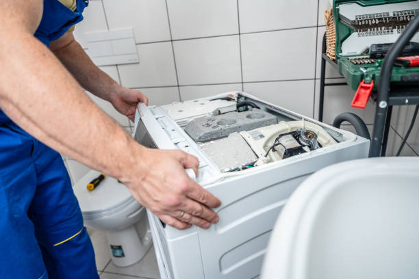

Drain issues
Washer not draining?We clear the issue and restore flow.
If water stays in the tub, the cycle stops early, or the washer gives a drain error, we test the pump, filter, hose, and control system before we recommend a fix.
Drain path checks
Pump, hose, standpipe, and filter testing.
Fast diagnosis
We isolate the blockage or failed part quickly.
Clean repair
Clear estimate and tidy in-home service.
What we check
The main reasons a washer will not drain
Drain problems can come from a blockage, a weak pump, or a control issue. We test the complete drain path before recommending parts.

Drain pump performance
We check whether the pump is clogged, weak, or not running at all.
Filter and hose blockage
Coins, lint, or debris can stop water from leaving the tub.
Drain routing and standpipe
We confirm the drain hose setup is correct and flowing freely.
Pressure switch and control
If the control does not read water level correctly, the cycle may stall.
Helpful note
Let us know if the washer hums, shows an error code, or drains very slowly. That helps us decide whether the likely cause is a clog or a failing pump.
Our process
A clean workflow for drain repair
We trace the drain issue from the tub to the outlet, explain what failed, and verify that water leaves the washer correctly before we finish.
1. Inspect
We check the pump, hose, filter, and control response.
2. Confirm
We isolate the blockage or failed component.
3. Repair
We restore normal drainage with tidy workmanship.
4. Verify
We run a drain test and confirm the tub empties correctly.
What you get
Clear estimate, targeted repair, and a washer that drains properly again.
Common causes
What usually causes a drain failure
Clogged pump filter
Small items and lint can block water flow quickly.
Kinked or blocked hose
The washer may pump, but water cannot move out properly.
Weak drain pump
A failing pump can hum, drain slowly, or stop under load.
Standpipe problem
A bad drain setup can cause poor flow or backup issues.
Pressure switch fault
The washer may not know it is ready to drain or spin.
Control issue
The board may fail to send the drain command at the right time.
FAQ
Quick answers about drain repair
Yes. A blocked filter is one of the most common reasons a washer drains slowly or not at all.
Sometimes. Humming can mean the pump is trying to work against a blockage, or it can mean the pump itself is failing.
Yes. Many washers will not move into spin until the water level has dropped enough.
Tell us if there is standing water, a humming sound, or an error code. That helps us narrow the likely drain fault before we arrive.